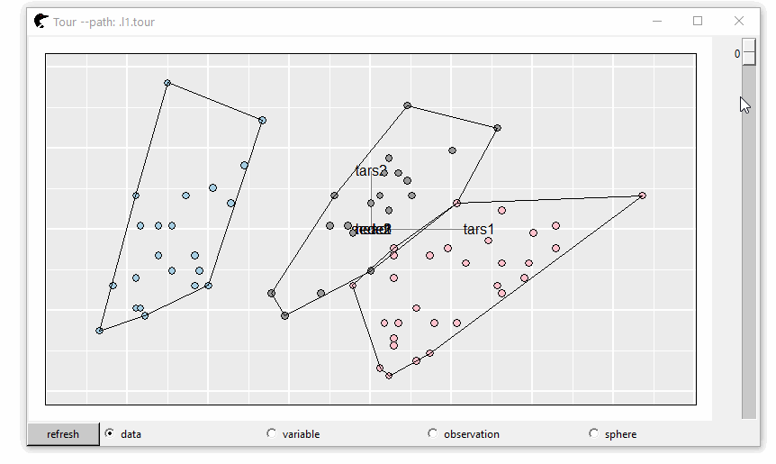
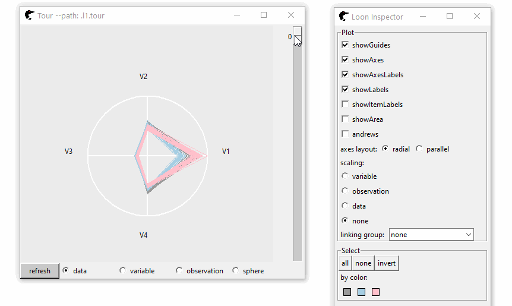

Grand Tour
The grand tour (D.Asimov) is a mechanism to randomly select a 2D projection in a p column space. Transitions between two serial projections are interpolated so that the rotating motion is smooth. It was first implemented in XGobi, GGobi (D.Cook, D.F.Swayne, A.Buja), then in R (package tourr H.Wickham, D.Cook and et al.)
In our package, such high dimensional visualization mechanism is re-implemented in loon. A slider bar is provided. As we scroll bar, the data will be transformed from this projection to the next.
Install
loon.tourr can be achieved directly from github repo
remotes::install_github("https://github.com/great-northern-diver/loon.tourr")Documents: the documentation of loon.tourr is here
A 2D projection
Colour represents the flea species. A convex hull is created to classify groups easily.
library(loon.tourr)
fl <- tourr::flea[, 1:6]
p <- l_tour(fl, color = tourr::flea$species)
l <- l_layer_hull(p, group = tourr::flea$species)
The bottom radio buttons represent the scaling of the data; if the random projections are not satifying, press button Reset, new random projections will be created.
A high dimensional projection
Beyond 2 dimensions, higher dimensional tours can also be created (displayed in radial axes, parallel axes or andrews plot).
p <- l_tour(fl,
tour_path = tourr::grand_tour(4),
color = tourr::flea$species)
The future of our project is obscure. It can be an isolated package or be merged in loon as a demo.